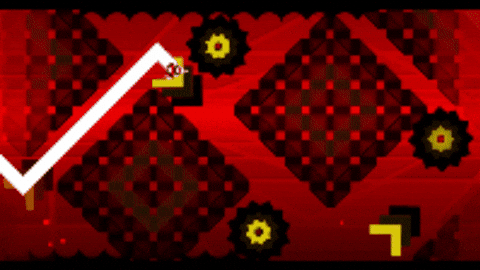
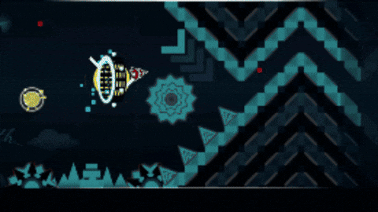

Wskocz do świata rytmu, geometrii i niesamowitych wyzwań!
Geometry Dash to popularna gra platformowa stworzona przez RobTop Games.
Gracz steruje geometryczną postacią, która pokonuje przeszkody, kolce i pułapki.
Gra wymaga refleksu, precyzji oraz dobrego wyczucia rytmu muzyki.
Każdy poziom to nowe wyzwanie, a ukończenie trudnej planszy daje ogromną satysfakcję!
Geometry Dash oferuje dynamiczną rozgrywkę, elektroniczną muzykę i kolorową grafikę. Możesz odblokowywać nowe ikony, zmieniać wygląd swojej postaci oraz tworzyć własne poziomy. Gra jest wymagająca, ale dzięki temu nigdy nie brakuje w niej emocji!
Masz pytania lub chcesz podzielić się swoim ulubionym poziomem? Porozmawiaj z innymi fanami Geometry Dash i wspólnie odkrywajcie nowe wyzwania!

